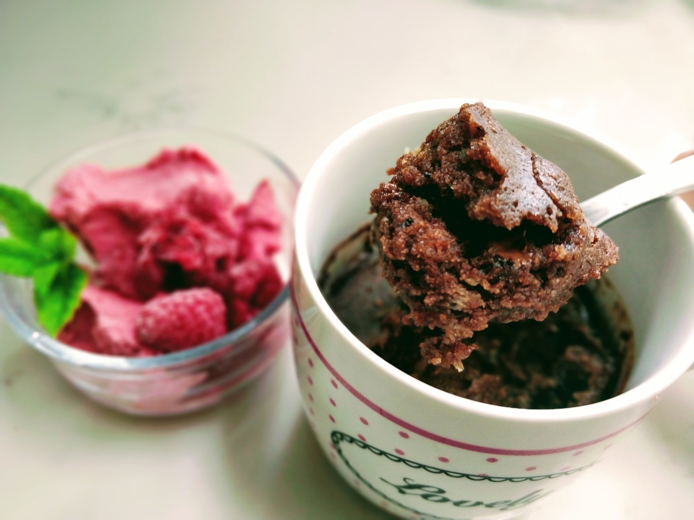

Home
Mug Brownie

Description
This is a delicious little treat! This mini mug brownie is easy to make and perfectly portioned.
Pro tip: serve with a scoop of ice cream on top.
Ingredients
- 2 tbl flour
- 5 tsp sugar
- 1 tbl cocoa powder
- 1 tbl vegetable oil
- 1 tbl water
- dash of salt
Steps
- Mix dry ingredients together in mug.
- Mix in the wet ingredients.
- Microwave on high for about 40 seconds, brownie should still be wet in the center.